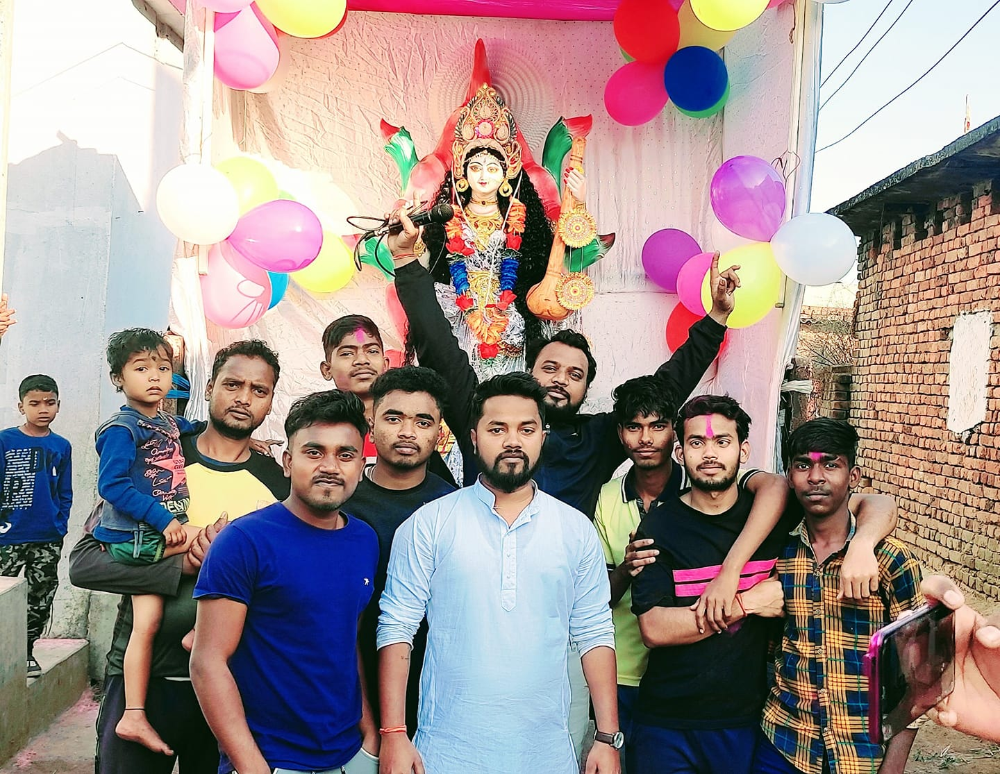

Community & Regional Heritage
Dharmabandh, Jharkhand
Culture & Heritage
Dharmabandh upholds time-tested regional customs, festivals celebrated with collective unity, and deep rural roots.
Agriculture & Livelihood
Agriculture, small trade, and local craftsmanship form the backbone of everyday life and economic stability in the area.
Digital Initiative
Promoting open connectivity, local youth development, and online accessibility for public awareness.